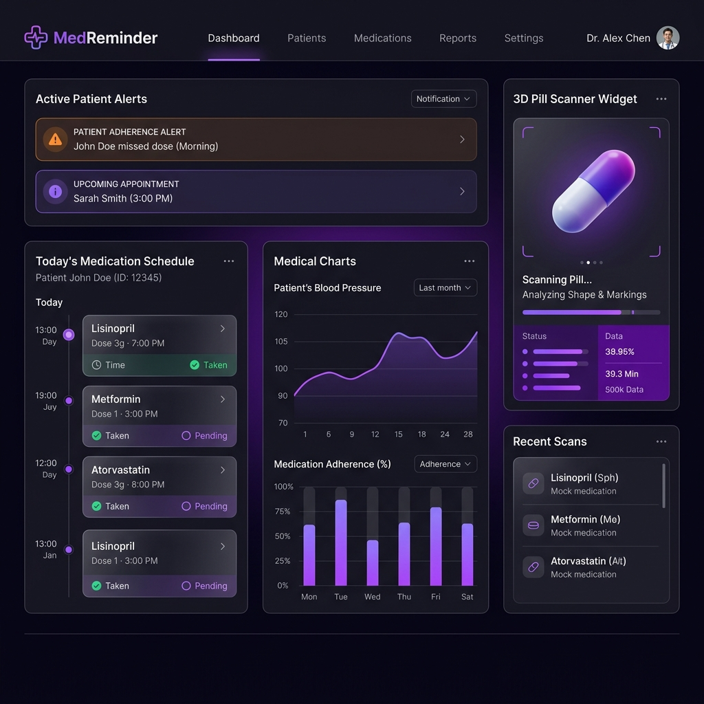
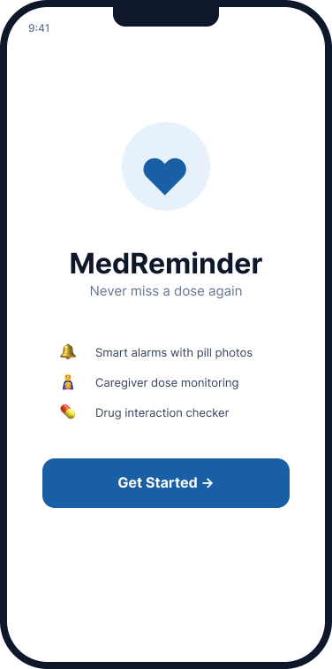
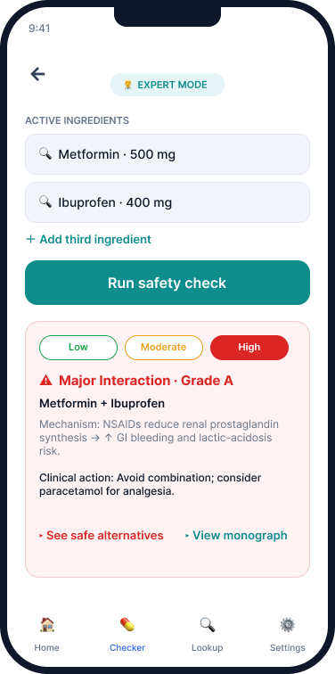
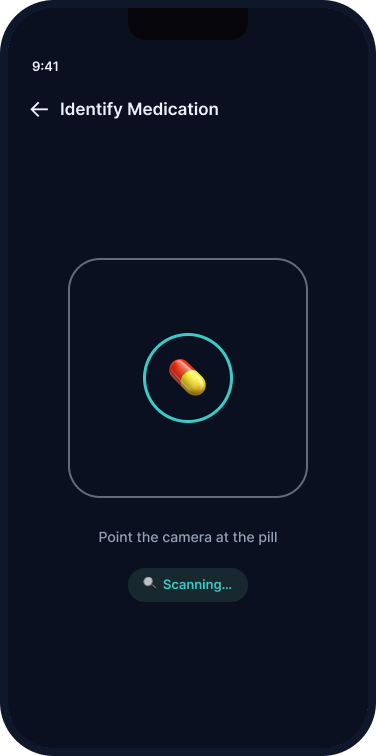

MedReminder
Nunca falhar uma toma. A primeira plataforma colaborativa que une Pacientes, Cuidadores, Farmácias e Biohackers num ecossistema único. Pill Scanner por IA, alertas inteligentes e verificador de interações ao balcão.

O Ecossistema a Quatro Frentes
Uma plataforma, Quatro Segmentos
O MedReminder adapta-se dinamicamente às necessidades de cada utilizador, criando um efeito de rede único no mercado europeu.
Pacientes Crónicos
Autonomia total com o Pill Scanner por câmara (TensorFlow), alarmes inconfundíveis e uma interface de alto contraste focada apenas na próxima toma.
Cuidadores Informais
Tranquilidade para a "Geração Sanduíche". Monitorização remota de familiares, calendário de adesão (verde/vermelho) e exportação de relatórios em PDF.
Rede de Farmácias (B2B)
O Interaction Checker cruza dados com APIs clínicas (DrugBank/FDA) para alertar o farmacêutico sobre interações perigosas ao balcão.
Biohackers e Atletas
Otimização avançada de stacks de suplementos, prevenção de antagonismos vitamínicos e integração com o Oura Ring e Apple Health.
Zero Atrito
Onboarding Universal e Acesso Direto
O ponto de entrada do MedReminder foi desenhado com foco absoluto na simplicidade. Sem ecrãs de registo exaustivos, a aplicação garante que qualquer utilizador — independentemente da sua literacia digital — consegue iniciar o seu plano de saúde num instante.
- Seleção de perfil rápida na entrada da aplicação.
- Interface limpa e minimalista sem distrações desnecessárias.
- Foco imediato nas ações principais: alarmes e verificações.

Clínico e Profissional
Verificador de Interações (FDA)
Não dependa apenas da memória. O MedReminder empodera o farmacêutico ao balcão com APIs clínicas certificadas, transformando um aviso genérico numa intervenção profissional informada.
- Leitura instantânea de ingredientes via código de barras.
- Escala de severidade cruzada com DrugBank e FDA Open Data.
- Acesso ao histórico seguro de prescrições do utente.

Acessibilidade Total
Pill Scanner por Câmara (IA)
Eliminámos a curva de aprendizagem para os mais idosos. Basta apontar a câmara ao comprimido: o modelo de Visão Computacional (TensorFlow Lite) reconhece-o e adiciona-o automaticamente ao plano diário.
- Zero atrito no onboarding de novos medicamentos.
- Verificação cruzada para evitar erros de dosagem em casa.
- Alarmes inconfundíveis até confirmação da toma.

Compliance & Segurança
Proteção de dados clínicos by design
A arquitetura do MedReminder foi desenhada desde a base para cumprir as mais rigorosas normas de proteção de dados europeias e internacionais.
Conformidade RGPD
Encriptação end-to-end (AES-256) de toda a informação de saúde. Dados anonimizados e políticas estritas de retenção.
Infraestrutura Soberana
Alojamento em servidores europeus com certificação ISO 27001 para dados sensíveis e backups georredundantes diários.
Controlo Granular
O paciente é o dono dos seus dados. Gestão rigorosa de permissões (RBAC) para definir o que o cuidador ou farmacêutico pode visualizar.
Compatibilidade
Integra com os sistemas que já utiliza
Pronto para transformar
a gestão clínica da sua organização?
Solicite uma demonstração gratuita e personalizada para a sua equipa.